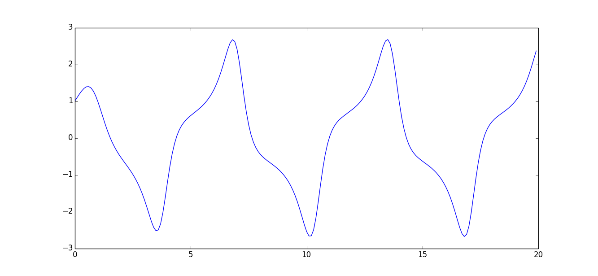

Tutorial
PySim is a python extension that enables the user to create simulations based on differential equations.
The differential equations are modelled as systems. Each system contains states and their time-derivatives, ders. It can contain parameters, pars,to be set by the users. The pars can only be set before the simulation is started, while inputs can be set at each timestep. The inputs can also be connected to to outputs. Inputs and outputs are non-state variables that can be used to connect systems during a simulation. It is possible to store the inputs, outputs and states during the simulation and look at the results afterwards.
Installing PySim
PySim will soon be installable using pip. There will be wheels for the Windows and Mac OS that are pre-compiled and ready to use by typing
pip install pysim
These wheels are built using the standard numpy wheel at pypi. If you want to use another version of numpy, e.g. the excelent one from Christoph Gohlke’s collection you will have to compile pysim yourself.
There are no wheel packages for linux, but it should still be installable by pip if you have the correct requisites (c++ build capability and the boost libraries).
For further instructions on how to install PySim and its prerequisites see:
Using PySim
To setup a simulation import a Sim object from the Simulation package. Then add the system that should be simulated, set any parameters, decide what variables or states that should be stored during the simulation, and then run the simulation. After it is finished the results can be inspected using for example matplotlib.
from pysim.simulation import Sim
from pysim.systems import VanDerPol
import matplotlib.pyplot as plt
#Create a Simulation
sim = Sim()
#Create, set up and add a system to simulation
sys = VanDerPol()
sys.store("x")
sim.addSys(sys)
#Simulate and plot the results
sim.simulate(20,0.1)
x = sys.res.x
plt.plot(x)
plt.show()
These commands will result in a plot like:
For more in depth information on how to use PySim check out Using PySim